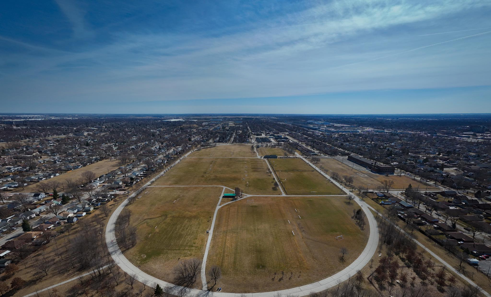

Address
3001 Seminole St, Windsor, Ontario N8Y 1X2

Image Source: Fly With Rye (Instagram)
About Ford Test Track Park
Once used by the Ford Motor Company to test new vehicles, the Ford Test Track Park is now one of Windsor’s most dynamic recreation areas. The site has been transformed into a multi-use public park that celebrates both Windsor’s industrial heritage and its vibrant community spirit.
The park features a large walking and cycling loop that mirrors the original test track layout, along with baseball diamonds, soccer fields, and open green areas for casual play. Families can enjoy modern playgrounds, picnic spots, and community events hosted throughout the summer.
In addition, the park includes a splash pad and outdoor exercise equipment, promoting healthy living for residents of all ages. Ford Test Track Park perfectly blends Windsor’s automotive legacy with active outdoor recreation, making it a beloved space for sports, relaxation, and local gatherings.